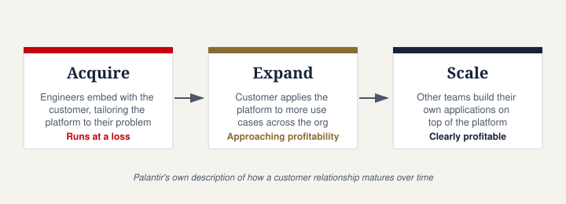

How Does Palantir Make Money?
Not affiliated with Palantir Technologies Inc. This page is an independent explainer based on publicly available sources.
Palantir makes money primarily by selling software subscriptions, not by selling data or running one-off consulting projects. Customers pay for ongoing access to Palantir's platforms — Gotham, Foundry, AIP, and Apollo — along with the maintenance and support needed to keep that software running.
The two ways customers pay
Palantir Cloud: customers pay a subscription to access Palantir's software in a hosted environment that Palantir itself manages. This is bundled with ongoing operations and maintenance (O&M) — updates, support, and the work required to keep the software running.
On-premises software: customers pay a subscription for the right to run Palantir's software on their own infrastructure — their own servers or their own cloud environment — again bundled with O&M services. This model matters for government and defense customers who often need software running in secure or air-gapped environments Palantir doesn't have direct access to.
In both cases, revenue is recurring rather than one-time, which is why Palantir's business is usually described as a software (SaaS-like) model rather than a consulting business — even though the company also does hands-on implementation work with customers, especially early in a relationship.
The "Acquire, Expand, Scale" pattern

Palantir has described its customer relationships as moving through three phases:
- Acquire: Palantir often invests heavily up front — deploying its own engineers to work directly with a new customer and tailor the platform to their specific problem. This phase typically runs at a loss for Palantir.
- Expand: as the customer starts using the platform for more use cases, the relationship becomes more valuable and starts approaching profitability.
- Scale: once fully integrated, the customer relationship turns clearly profitable, and other teams within that organization often begin building their own applications on top of the platform.
This pattern is why Palantir emphasizes "land and expand" — winning an initial contract, often narrow in scope, and then growing revenue within that same customer over time rather than relying solely on new customer acquisition.
Two reporting segments: government and commercial
Palantir reports its revenue split across two segments:
- Government: contracts with U.S. and allied government agencies, defense departments, and intelligence organizations. This has historically been Palantir's core customer base, dating back to its earliest years working with the U.S. intelligence community on counterterrorism-related data problems.
- Commercial: contracts with private businesses across industries like manufacturing, energy, healthcare, and finance, using Foundry (and increasingly AIP) to integrate data and optimize operations.
In recent periods, Palantir has emphasized that commercial revenue — and particularly U.S. commercial revenue — has been growing quickly, alongside its long-standing government business.
Why the margins look like a software company, not a consulting firm
A useful comparison: traditional consulting firms generate revenue that scales roughly with headcount — more revenue requires more billable staff, and profit margins are structurally limited (often in the 30–40% range). Palantir's reported gross margins run well above that, consistently above 80% in recent periods — closer to what's typical for software companies, where revenue can grow without a proportional increase in staff, once the underlying platform is built and reused across customers.
Where the AI platform (AIP) fits into revenue
AIP is bundled with Palantir's existing platforms rather than sold as a fully separate product. It gives organizations a way to connect large language models to their own operational data — through Foundry or Gotham — rather than using AI models in isolation from a company's actual records and workflows. Palantir has pointed to AIP as a driver of faster sales cycles, citing bootcamp-style onboarding sessions that let prospective customers test the platform against their own data before committing to a contract.
Have thoughts on this page? Join the discussion below, or start a new one in People's Reflections.